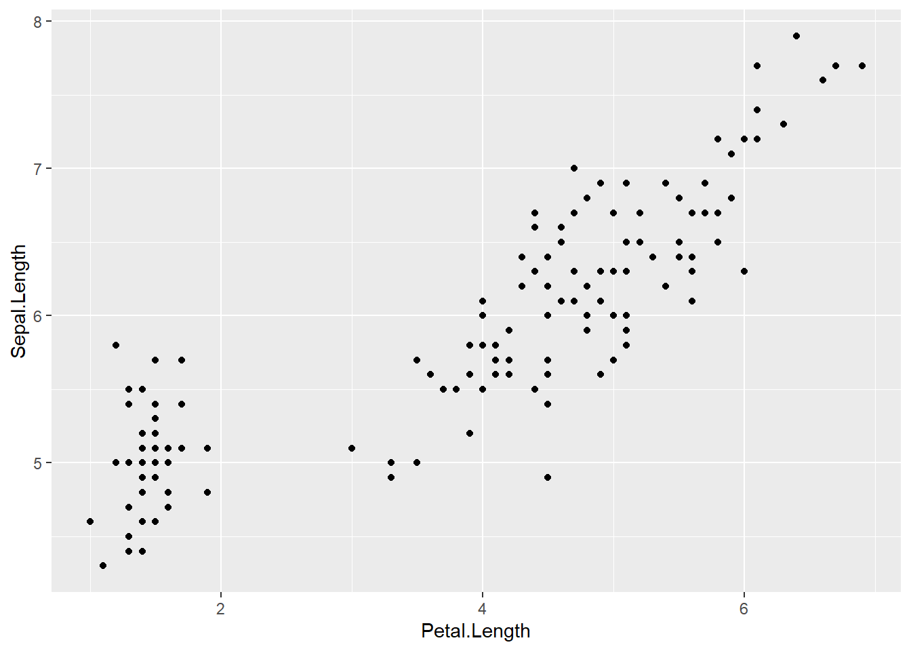
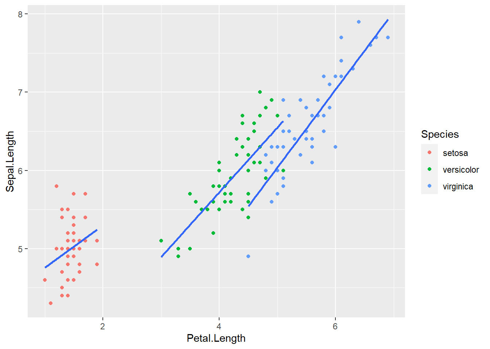
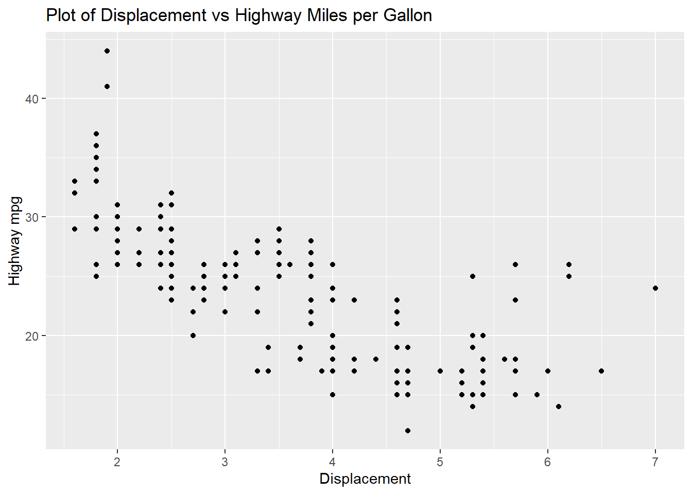

data_hard_code <- data.frame(
Name = c("Alice", "Bob", "Charlie"),
Age = c(21,25,35),
Height = c(5.5,6.2,5.9)
)
data_hard_code Name Age Height
1 Alice 21 5.5
2 Bob 25 6.2
3 Charlie 35 5.9Include a very brief summary of what you learnt in this class here.
Today, I learnt the following concepts in class:
Provide more concrete details here. You can also use footnotes1 if you like
Manually hard coding data into R (tedious for data sets any larger than this):
data_hard_code <- data.frame(
Name = c("Alice", "Bob", "Charlie"),
Age = c(21,25,35),
Height = c(5.5,6.2,5.9)
)
data_hard_code Name Age Height
1 Alice 21 5.5
2 Bob 25 6.2
3 Charlie 35 5.9Reading in a csv file:
data_from_csv <- read.csv("./data12423.csv")
data_from_csv name age height
1 Alice 21 5.5
2 Bob 25 6.2
3 Charlie 35 5.9More advanced and efficient methods to read files:
“read_csv” from tidyverse
“data.table” package in R
dyplr and ggplot2 are very helpful for Exploratory Data Analysis.
dyplr provides a set of “verbs” for manipulating data.
We will use the mpg dataset as an example.
library(ggplot2)
library(dplyr)
Attaching package: 'dplyr'The following objects are masked from 'package:stats':
filter, lagThe following objects are masked from 'package:base':
intersect, setdiff, setequal, unionhead(mpg,5)# A tibble: 5 × 11
manufacturer model displ year cyl trans drv cty hwy fl class
<chr> <chr> <dbl> <int> <int> <chr> <chr> <int> <int> <chr> <chr>
1 audi a4 1.8 1999 4 auto(l5) f 18 29 p compa…
2 audi a4 1.8 1999 4 manual(m5) f 21 29 p compa…
3 audi a4 2 2008 4 manual(m6) f 20 31 p compa…
4 audi a4 2 2008 4 auto(av) f 21 30 p compa…
5 audi a4 2.8 1999 6 auto(l5) f 16 26 p compa…We will also look at the Iris dataset.
head(iris,5) Sepal.Length Sepal.Width Petal.Length Petal.Width Species
1 5.1 3.5 1.4 0.2 setosa
2 4.9 3.0 1.4 0.2 setosa
3 4.7 3.2 1.3 0.2 setosa
4 4.6 3.1 1.5 0.2 setosa
5 5.0 3.6 1.4 0.2 setosaCleaning datasets:
This is what dyplr is for.
Examples:
mpg%>%
select(c(model,displ)) # selects particular columns# A tibble: 234 × 2
model displ
<chr> <dbl>
1 a4 1.8
2 a4 1.8
3 a4 2
4 a4 2
5 a4 2.8
6 a4 2.8
7 a4 3.1
8 a4 quattro 1.8
9 a4 quattro 1.8
10 a4 quattro 2
# … with 224 more rowsiris%>%
mutate(Sepal_Area = Sepal.Length * Sepal.Width) # creates a new variable based on existing ones Sepal.Length Sepal.Width Petal.Length Petal.Width Species Sepal_Area
1 5.1 3.5 1.4 0.2 setosa 17.85
2 4.9 3.0 1.4 0.2 setosa 14.70
3 4.7 3.2 1.3 0.2 setosa 15.04
4 4.6 3.1 1.5 0.2 setosa 14.26
5 5.0 3.6 1.4 0.2 setosa 18.00
6 5.4 3.9 1.7 0.4 setosa 21.06
7 4.6 3.4 1.4 0.3 setosa 15.64
8 5.0 3.4 1.5 0.2 setosa 17.00
9 4.4 2.9 1.4 0.2 setosa 12.76
10 4.9 3.1 1.5 0.1 setosa 15.19
11 5.4 3.7 1.5 0.2 setosa 19.98
12 4.8 3.4 1.6 0.2 setosa 16.32
13 4.8 3.0 1.4 0.1 setosa 14.40
14 4.3 3.0 1.1 0.1 setosa 12.90
15 5.8 4.0 1.2 0.2 setosa 23.20
16 5.7 4.4 1.5 0.4 setosa 25.08
17 5.4 3.9 1.3 0.4 setosa 21.06
18 5.1 3.5 1.4 0.3 setosa 17.85
19 5.7 3.8 1.7 0.3 setosa 21.66
20 5.1 3.8 1.5 0.3 setosa 19.38
21 5.4 3.4 1.7 0.2 setosa 18.36
22 5.1 3.7 1.5 0.4 setosa 18.87
23 4.6 3.6 1.0 0.2 setosa 16.56
24 5.1 3.3 1.7 0.5 setosa 16.83
25 4.8 3.4 1.9 0.2 setosa 16.32
26 5.0 3.0 1.6 0.2 setosa 15.00
27 5.0 3.4 1.6 0.4 setosa 17.00
28 5.2 3.5 1.5 0.2 setosa 18.20
29 5.2 3.4 1.4 0.2 setosa 17.68
30 4.7 3.2 1.6 0.2 setosa 15.04
31 4.8 3.1 1.6 0.2 setosa 14.88
32 5.4 3.4 1.5 0.4 setosa 18.36
33 5.2 4.1 1.5 0.1 setosa 21.32
34 5.5 4.2 1.4 0.2 setosa 23.10
35 4.9 3.1 1.5 0.2 setosa 15.19
36 5.0 3.2 1.2 0.2 setosa 16.00
37 5.5 3.5 1.3 0.2 setosa 19.25
38 4.9 3.6 1.4 0.1 setosa 17.64
39 4.4 3.0 1.3 0.2 setosa 13.20
40 5.1 3.4 1.5 0.2 setosa 17.34
41 5.0 3.5 1.3 0.3 setosa 17.50
42 4.5 2.3 1.3 0.3 setosa 10.35
43 4.4 3.2 1.3 0.2 setosa 14.08
44 5.0 3.5 1.6 0.6 setosa 17.50
45 5.1 3.8 1.9 0.4 setosa 19.38
46 4.8 3.0 1.4 0.3 setosa 14.40
47 5.1 3.8 1.6 0.2 setosa 19.38
48 4.6 3.2 1.4 0.2 setosa 14.72
49 5.3 3.7 1.5 0.2 setosa 19.61
50 5.0 3.3 1.4 0.2 setosa 16.50
51 7.0 3.2 4.7 1.4 versicolor 22.40
52 6.4 3.2 4.5 1.5 versicolor 20.48
53 6.9 3.1 4.9 1.5 versicolor 21.39
54 5.5 2.3 4.0 1.3 versicolor 12.65
55 6.5 2.8 4.6 1.5 versicolor 18.20
56 5.7 2.8 4.5 1.3 versicolor 15.96
57 6.3 3.3 4.7 1.6 versicolor 20.79
58 4.9 2.4 3.3 1.0 versicolor 11.76
59 6.6 2.9 4.6 1.3 versicolor 19.14
60 5.2 2.7 3.9 1.4 versicolor 14.04
61 5.0 2.0 3.5 1.0 versicolor 10.00
62 5.9 3.0 4.2 1.5 versicolor 17.70
63 6.0 2.2 4.0 1.0 versicolor 13.20
64 6.1 2.9 4.7 1.4 versicolor 17.69
65 5.6 2.9 3.6 1.3 versicolor 16.24
66 6.7 3.1 4.4 1.4 versicolor 20.77
67 5.6 3.0 4.5 1.5 versicolor 16.80
68 5.8 2.7 4.1 1.0 versicolor 15.66
69 6.2 2.2 4.5 1.5 versicolor 13.64
70 5.6 2.5 3.9 1.1 versicolor 14.00
71 5.9 3.2 4.8 1.8 versicolor 18.88
72 6.1 2.8 4.0 1.3 versicolor 17.08
73 6.3 2.5 4.9 1.5 versicolor 15.75
74 6.1 2.8 4.7 1.2 versicolor 17.08
75 6.4 2.9 4.3 1.3 versicolor 18.56
76 6.6 3.0 4.4 1.4 versicolor 19.80
77 6.8 2.8 4.8 1.4 versicolor 19.04
78 6.7 3.0 5.0 1.7 versicolor 20.10
79 6.0 2.9 4.5 1.5 versicolor 17.40
80 5.7 2.6 3.5 1.0 versicolor 14.82
81 5.5 2.4 3.8 1.1 versicolor 13.20
82 5.5 2.4 3.7 1.0 versicolor 13.20
83 5.8 2.7 3.9 1.2 versicolor 15.66
84 6.0 2.7 5.1 1.6 versicolor 16.20
85 5.4 3.0 4.5 1.5 versicolor 16.20
86 6.0 3.4 4.5 1.6 versicolor 20.40
87 6.7 3.1 4.7 1.5 versicolor 20.77
88 6.3 2.3 4.4 1.3 versicolor 14.49
89 5.6 3.0 4.1 1.3 versicolor 16.80
90 5.5 2.5 4.0 1.3 versicolor 13.75
91 5.5 2.6 4.4 1.2 versicolor 14.30
92 6.1 3.0 4.6 1.4 versicolor 18.30
93 5.8 2.6 4.0 1.2 versicolor 15.08
94 5.0 2.3 3.3 1.0 versicolor 11.50
95 5.6 2.7 4.2 1.3 versicolor 15.12
96 5.7 3.0 4.2 1.2 versicolor 17.10
97 5.7 2.9 4.2 1.3 versicolor 16.53
98 6.2 2.9 4.3 1.3 versicolor 17.98
99 5.1 2.5 3.0 1.1 versicolor 12.75
100 5.7 2.8 4.1 1.3 versicolor 15.96
101 6.3 3.3 6.0 2.5 virginica 20.79
102 5.8 2.7 5.1 1.9 virginica 15.66
103 7.1 3.0 5.9 2.1 virginica 21.30
104 6.3 2.9 5.6 1.8 virginica 18.27
105 6.5 3.0 5.8 2.2 virginica 19.50
106 7.6 3.0 6.6 2.1 virginica 22.80
107 4.9 2.5 4.5 1.7 virginica 12.25
108 7.3 2.9 6.3 1.8 virginica 21.17
109 6.7 2.5 5.8 1.8 virginica 16.75
110 7.2 3.6 6.1 2.5 virginica 25.92
111 6.5 3.2 5.1 2.0 virginica 20.80
112 6.4 2.7 5.3 1.9 virginica 17.28
113 6.8 3.0 5.5 2.1 virginica 20.40
114 5.7 2.5 5.0 2.0 virginica 14.25
115 5.8 2.8 5.1 2.4 virginica 16.24
116 6.4 3.2 5.3 2.3 virginica 20.48
117 6.5 3.0 5.5 1.8 virginica 19.50
118 7.7 3.8 6.7 2.2 virginica 29.26
119 7.7 2.6 6.9 2.3 virginica 20.02
120 6.0 2.2 5.0 1.5 virginica 13.20
121 6.9 3.2 5.7 2.3 virginica 22.08
122 5.6 2.8 4.9 2.0 virginica 15.68
123 7.7 2.8 6.7 2.0 virginica 21.56
124 6.3 2.7 4.9 1.8 virginica 17.01
125 6.7 3.3 5.7 2.1 virginica 22.11
126 7.2 3.2 6.0 1.8 virginica 23.04
127 6.2 2.8 4.8 1.8 virginica 17.36
128 6.1 3.0 4.9 1.8 virginica 18.30
129 6.4 2.8 5.6 2.1 virginica 17.92
130 7.2 3.0 5.8 1.6 virginica 21.60
131 7.4 2.8 6.1 1.9 virginica 20.72
132 7.9 3.8 6.4 2.0 virginica 30.02
133 6.4 2.8 5.6 2.2 virginica 17.92
134 6.3 2.8 5.1 1.5 virginica 17.64
135 6.1 2.6 5.6 1.4 virginica 15.86
136 7.7 3.0 6.1 2.3 virginica 23.10
137 6.3 3.4 5.6 2.4 virginica 21.42
138 6.4 3.1 5.5 1.8 virginica 19.84
139 6.0 3.0 4.8 1.8 virginica 18.00
140 6.9 3.1 5.4 2.1 virginica 21.39
141 6.7 3.1 5.6 2.4 virginica 20.77
142 6.9 3.1 5.1 2.3 virginica 21.39
143 5.8 2.7 5.1 1.9 virginica 15.66
144 6.8 3.2 5.9 2.3 virginica 21.76
145 6.7 3.3 5.7 2.5 virginica 22.11
146 6.7 3.0 5.2 2.3 virginica 20.10
147 6.3 2.5 5.0 1.9 virginica 15.75
148 6.5 3.0 5.2 2.0 virginica 19.50
149 6.2 3.4 5.4 2.3 virginica 21.08
150 5.9 3.0 5.1 1.8 virginica 17.70mpg%>%
filter(class == "compact") # selects particular cases based on a set of criteria# A tibble: 47 × 11
manufacturer model displ year cyl trans drv cty hwy fl class
<chr> <chr> <dbl> <int> <int> <chr> <chr> <int> <int> <chr> <chr>
1 audi a4 1.8 1999 4 auto… f 18 29 p comp…
2 audi a4 1.8 1999 4 manu… f 21 29 p comp…
3 audi a4 2 2008 4 manu… f 20 31 p comp…
4 audi a4 2 2008 4 auto… f 21 30 p comp…
5 audi a4 2.8 1999 6 auto… f 16 26 p comp…
6 audi a4 2.8 1999 6 manu… f 18 26 p comp…
7 audi a4 3.1 2008 6 auto… f 18 27 p comp…
8 audi a4 quattro 1.8 1999 4 manu… 4 18 26 p comp…
9 audi a4 quattro 1.8 1999 4 auto… 4 16 25 p comp…
10 audi a4 quattro 2 2008 4 manu… 4 20 28 p comp…
# … with 37 more rowsOther verbs include summary(), pivot_longer(), pivot_wider(), left_join(), inner_join(), etc.
Quick example:
plt <- ggplot(iris) # use the iris dataset for ggplot
plt + geom_point(aes(x=Petal.Length, y=Sepal.Length)) # add points to the graph
plt + geom_point(aes(x=Petal.Length, y=Sepal.Length, color=Species)) # color by species
plt + geom_point(aes(x=Petal.Length, y=Sepal.Length, color=Species)) +
geom_smooth(aes(x=Petal.Length, y=Sepal.Length, group=Species), method="lm", se=FALSE) # create a linear trendline for each species' data without the standard error margins`geom_smooth()` using formula = 'y ~ x'
Include a very brief summary of what you learnt in this class here.
Today, I learnt the following concepts in class:
Provide more concrete details here:
ggplot(mpg) +
geom_point(aes(x=displ, y=hwy)) + theme(plot.background = element_rect(fill = "white")) +labs(title = "Plot of Displacement vs Highway Miles per Gallon",
x = "Displacement", y = "Highway mpg")
# highlight code --> "addins" at top of RStudio --> ggThemeAssistFactors are used in categorical variables, let’s look at an example:
“var” contains the country code for people in North America
var <- c(
"USA",
"USA",
"CAN",
"CAN",
"CAN",
"CAN",
"MEX",
"MEX"
)
var[1] "USA" "USA" "CAN" "CAN" "CAN" "CAN" "MEX" "MEX"To tell R that this is categorical and not just a vector of strings, specify using as.factor()
as.factor(var)[1] USA USA CAN CAN CAN CAN MEX MEX
Levels: CAN MEX USAAnother example:
head(iris,3) Sepal.Length Sepal.Width Petal.Length Petal.Width Species
1 5.1 3.5 1.4 0.2 setosa
2 4.9 3.0 1.4 0.2 setosa
3 4.7 3.2 1.3 0.2 setosairis$Species [1] setosa setosa setosa setosa setosa setosa
[7] setosa setosa setosa setosa setosa setosa
[13] setosa setosa setosa setosa setosa setosa
[19] setosa setosa setosa setosa setosa setosa
[25] setosa setosa setosa setosa setosa setosa
[31] setosa setosa setosa setosa setosa setosa
[37] setosa setosa setosa setosa setosa setosa
[43] setosa setosa setosa setosa setosa setosa
[49] setosa setosa versicolor versicolor versicolor versicolor
[55] versicolor versicolor versicolor versicolor versicolor versicolor
[61] versicolor versicolor versicolor versicolor versicolor versicolor
[67] versicolor versicolor versicolor versicolor versicolor versicolor
[73] versicolor versicolor versicolor versicolor versicolor versicolor
[79] versicolor versicolor versicolor versicolor versicolor versicolor
[85] versicolor versicolor versicolor versicolor versicolor versicolor
[91] versicolor versicolor versicolor versicolor versicolor versicolor
[97] versicolor versicolor versicolor versicolor virginica virginica
[103] virginica virginica virginica virginica virginica virginica
[109] virginica virginica virginica virginica virginica virginica
[115] virginica virginica virginica virginica virginica virginica
[121] virginica virginica virginica virginica virginica virginica
[127] virginica virginica virginica virginica virginica virginica
[133] virginica virginica virginica virginica virginica virginica
[139] virginica virginica virginica virginica virginica virginica
[145] virginica virginica virginica virginica virginica virginica
Levels: setosa versicolor virginicaAlso look at mpg
head(mpg, 3)# A tibble: 3 × 11
manufacturer model displ year cyl trans drv cty hwy fl class
<chr> <chr> <dbl> <int> <int> <chr> <chr> <int> <int> <chr> <chr>
1 audi a4 1.8 1999 4 auto(l5) f 18 29 p compa…
2 audi a4 1.8 1999 4 manual(m5) f 21 29 p compa…
3 audi a4 2 2008 4 manual(m6) f 20 31 p compa…as.factor(mpg$class) [1] compact compact compact compact compact compact
[7] compact compact compact compact compact compact
[13] compact compact compact midsize midsize midsize
[19] suv suv suv suv suv 2seater
[25] 2seater 2seater 2seater 2seater suv suv
[31] suv suv midsize midsize midsize midsize
[37] midsize minivan minivan minivan minivan minivan
[43] minivan minivan minivan minivan minivan minivan
[49] pickup pickup pickup pickup pickup pickup
[55] pickup pickup pickup suv suv suv
[61] suv suv suv suv pickup pickup
[67] pickup pickup pickup pickup pickup pickup
[73] pickup pickup suv suv suv suv
[79] suv suv suv suv suv pickup
[85] pickup pickup pickup pickup pickup pickup
[91] subcompact subcompact subcompact subcompact subcompact subcompact
[97] subcompact subcompact subcompact subcompact subcompact subcompact
[103] subcompact subcompact subcompact subcompact subcompact subcompact
[109] midsize midsize midsize midsize midsize midsize
[115] midsize subcompact subcompact subcompact subcompact subcompact
[121] subcompact subcompact suv suv suv suv
[127] suv suv suv suv suv suv
[133] suv suv suv suv suv suv
[139] suv suv suv compact compact midsize
[145] midsize midsize midsize midsize midsize midsize
[151] suv suv suv suv midsize midsize
[157] midsize midsize midsize suv suv suv
[163] suv suv suv subcompact subcompact subcompact
[169] subcompact compact compact compact compact suv
[175] suv suv suv suv suv midsize
[181] midsize midsize midsize midsize midsize midsize
[187] compact compact compact compact compact compact
[193] compact compact compact compact compact compact
[199] suv suv pickup pickup pickup pickup
[205] pickup pickup pickup compact compact compact
[211] compact compact compact compact compact compact
[217] compact compact compact compact compact subcompact
[223] subcompact subcompact subcompact subcompact subcompact midsize
[229] midsize midsize midsize midsize midsize midsize
Levels: 2seater compact midsize minivan pickup subcompact suvWhen working with data, we will often need to specify the data type so keeping track of things like this is very useful.
The forcats package is useful when working with factors:
library(forcats)
manufacturer <- as.factor(mpg$manufacturer)
fct_reorder(manufacturer, mpg$hwy, min) [1] audi audi audi audi audi audi
[7] audi audi audi audi audi audi
[13] audi audi audi audi audi audi
[19] chevrolet chevrolet chevrolet chevrolet chevrolet chevrolet
[25] chevrolet chevrolet chevrolet chevrolet chevrolet chevrolet
[31] chevrolet chevrolet chevrolet chevrolet chevrolet chevrolet
[37] chevrolet dodge dodge dodge dodge dodge
[43] dodge dodge dodge dodge dodge dodge
[49] dodge dodge dodge dodge dodge dodge
[55] dodge dodge dodge dodge dodge dodge
[61] dodge dodge dodge dodge dodge dodge
[67] dodge dodge dodge dodge dodge dodge
[73] dodge dodge ford ford ford ford
[79] ford ford ford ford ford ford
[85] ford ford ford ford ford ford
[91] ford ford ford ford ford ford
[97] ford ford ford honda honda honda
[103] honda honda honda honda honda honda
[109] hyundai hyundai hyundai hyundai hyundai hyundai
[115] hyundai hyundai hyundai hyundai hyundai hyundai
[121] hyundai hyundai jeep jeep jeep jeep
[127] jeep jeep jeep jeep land rover land rover
[133] land rover land rover lincoln lincoln lincoln mercury
[139] mercury mercury mercury nissan nissan nissan
[145] nissan nissan nissan nissan nissan nissan
[151] nissan nissan nissan nissan pontiac pontiac
[157] pontiac pontiac pontiac subaru subaru subaru
[163] subaru subaru subaru subaru subaru subaru
[169] subaru subaru subaru subaru subaru toyota
[175] toyota toyota toyota toyota toyota toyota
[181] toyota toyota toyota toyota toyota toyota
[187] toyota toyota toyota toyota toyota toyota
[193] toyota toyota toyota toyota toyota toyota
[199] toyota toyota toyota toyota toyota toyota
[205] toyota toyota toyota volkswagen volkswagen volkswagen
[211] volkswagen volkswagen volkswagen volkswagen volkswagen volkswagen
[217] volkswagen volkswagen volkswagen volkswagen volkswagen volkswagen
[223] volkswagen volkswagen volkswagen volkswagen volkswagen volkswagen
[229] volkswagen volkswagen volkswagen volkswagen volkswagen volkswagen
15 Levels: dodge jeep chevrolet ford land rover toyota lincoln ... hondaWe will return to this in a few weeks for logistic regression.
This package provides functional programming tools. Example:
Consider this task:
#using for
results<-c()
for(i in 1:10){
M <- matrix(
runif(i*i), nrow=i
)
results[i]<- mean(M)
}
results [1] 0.6714373 0.3771936 0.3582264 0.4206159 0.4391511 0.4749398 0.5284520
[8] 0.5228876 0.4932103 0.4906235A functional way to approach the same problem: i -> M[ixi] -> mean(M)
library(purrr)
map(
1:10,
function(i){
mean(
matrix(
c(1:i*i), nrow=i
)
)
}
)[[1]]
[1] 1
[[2]]
[1] 3
[[3]]
[1] 6
[[4]]
[1] 10
[[5]]
[1] 15
[[6]]
[1] 21
[[7]]
[1] 28
[[8]]
[1] 36
[[9]]
[1] 45
[[10]]
[1] 55You can include some footnotes here↩︎